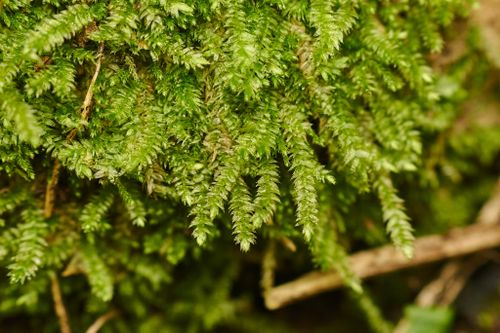

Stereophyllaceae
No widely recognized common name
Stereophyllaceae is a family of pleurocarpous mosses within the order Hypnales, characterized by their typically flattened (complanate) foliage, often forming glossy mats. Traditionally centered around the genus Stereophyllum, the family concept has recently expanded based on molecular data to include several genera previously placed elsewhere (e.g., in Plagiotheciaceae or Hypnaceae). They are found mostly in tropical and subtropical regions, growing on rock, soil, tree bases, or decaying wood.
Overview
Stereophyllaceae are pleurocarpous mosses recognized primarily by their distinctive complanate growth habit, where stems and leaves are flattened in one plane, often resembling miniature ferns or braided structures. They typically form smooth, often shiny mats adhering closely to their substrate.
The family's definition has evolved; molecular phylogenetics has shown that several genera with similar complanate habits, previously scattered in other families like Plagiotheciaceae and Hypnaceae, form a cohesive group with Stereophyllum. This expanded Stereophyllaceae is predominantly tropical and subtropical but extends into some temperate areas. Members occupy various niches, commonly found in shaded, humid environments on diverse substrates like rocks, logs, tree bases, and soil.
Key features include the flattened foliage, often asymmetric leaves with variable costae, smooth leaf cells, and typically inclined to horizontal capsules with a well-developed double (hypnoid) peristome.
Quick Facts
- Scientific Name: Stereophyllaceae
- Common Name: None widely recognized
- Number of Genera: ~6-10 (expanded concept including Stereophyllum, Entodontopsis, Pilosium, Catagonium, Juratzkaea, etc.)
- Number of Species: Approximately 50+ (in expanded sense)
- Distribution: Pantropical, extending into some temperate regions
- Evolutionary Group: Bryophytes - Mosses (Class Bryopsida, Order Hypnales, Habit: Pleurocarpous)
Key Characteristics
Growth Form and Habit
Plants are pleurocarpous, forming flat, often extensive, glossy mats. Stems are creeping, typically adhering closely to the substrate, and are irregularly to subpinnately branched. Foliage is strongly complanate (flattened in one plane). They grow on various substrates including rock (epilithic), soil, tree bases, roots, and decaying wood, usually in shaded and moist locations.
Leaves
Leaves are strongly flattened in arrangement, often appearing two-ranked (distichous) but are spirally inserted. They are typically asymmetric, especially the lateral leaves compared to dorsal/ventral leaves. Leaf shape varies from ovate or oblong-lanceolate to lingulate (tongue-shaped). The leaf apex is highly variable, often obtuse, rounded, or broadly acute, sometimes apiculate or mucronate. Margins are usually entire or finely serrulate near the apex. The costa is extremely variable: absent, short and double, single and short (ending mid-leaf), or occasionally single and longer (subpercurrent). Laminal cells are typically smooth, linear-flexuose to rhomboidal. Alar cells at the basal corners are usually differentiated, often forming distinct, sometimes excavate or inflated groups.
Gametangia and Sporophytes
Sporophytes arise laterally from stems. Plants can be autoicous or dioicous.
- Seta: Usually elongate, slender, smooth, often reddish or yellowish.
- Capsule: Typically inclined to horizontal, sometimes suberect, ovoid to cylindrical, often asymmetric or curved, especially when dry (may contract below the mouth). The operculum is usually conic to short-rostrate.
- Peristome: Distinctly double and well-developed (hypnoid type).
- Exostome: 16 lanceolate, yellowish to brownish teeth, cross-striolate below, papillose above, with a distinct zigzag median line.
- Endostome: Consists of a high basal membrane, keeled and often perforated segments (about the same height as the teeth), and usually 1-3 nodulose or appendiculate cilia between the segments.
- Calyptra: Cucullate (hood-shaped), smooth, shed early.
Spores
Spores are typically small, spherical, and finely papillose to nearly smooth.
Field Identification
Identifying Stereophyllaceae in the field relies on recognizing the combination of a pleurocarpous, mat-forming habit with distinctly flattened (complanate) foliage, often appearing glossy. Leaf shape and costa characters are important but variable.
Primary Identification Features
- Pleurocarpous Mats: Plants grow as creeping, flattened mats.
- Strongly Complanate Foliage: Leaves and branches are flattened in one plane, giving a pressed appearance.
- Leaf Shape/Apex: Often oblong or tongue-shaped with rounded or obtuse apices (though variable).
- Variable Costa: Check for costa presence/absence/length (can be short & double, single & short, etc.).
- Habitat: Typically on rock, soil, or wood in shaded, moist areas.
- Inclined/Horizontal Capsule: If present, capsules are usually not erect but tilted or horizontal on long setae.
Secondary Identification Features
- Glossy Appearance: Mats often have a noticeable sheen.
- Smooth Leaf Cells: Cells lack papillae (requires magnification).
- Differentiated Alar Cells: Basal corners of leaves often have distinct groups of cells.
- Asymmetric Leaves: Lateral leaves often differ slightly in shape from dorsal/ventral ones.
Seasonal Identification Tips
- Gametophyte: The flat, leafy mats are visible year-round.
- Sporophytes: Look for the characteristic inclined/horizontal capsules on long stalks, which are produced seasonally.
Common Confusion Points
- Plagiotheciaceae: Very similar complanate habit. Plagiotheciaceae often have decurrent leaf bases (running down the stem), more consistently short/double or absent costae, and sometimes different cell shapes or capsule orientations. Distinctions can be subtle and rely on combinations of features, sometimes requiring microscopy.
- Hypnaceae: Some Hypnaceae can be complanate, but many are more pinnately branched and less strictly flattened. Leaf shapes (often falcate-secund) and costa details usually differ.
- Entodontaceae: Also form glossy, often complanate mats, but typically have erect capsules and a different peristome structure (endostome segments often linear, cilia rudimentary or absent).
- Neckeraceae: Some are complanate but often have undulate (wavy) leaves and frequently different costa and peristome structures.
Field Guide Quick Reference
Look For:
- Pleurocarpous, flat, glossy mats
- Strongly complanate foliage
- Asymmetric leaves, often oblong/lingulate
- Apex often rounded/obtuse
- Variable costa (absent to single & short)
- Smooth leaf cells
- Inclined/horizontal capsules on long setae
- Habitat: rock, soil, wood bases
Key Variations:
- Presence/absence/length of costa
- Degree of glossiness
- Specific leaf shape and apex detail
- Presence/abundance of sporophytes
Notable Examples
Reflecting the modern, expanded concept of the family, Stereophyllaceae includes the type genus Stereophyllum and several others previously placed elsewhere.

Stereophyllum Mitt.
(Genus; species include S. radiculosum, S. wrightii)
The type genus, characterized by strongly complanate plants, often lingulate leaves with rounded apices, typically a short and double or absent costa, and differentiated alar cells. Common on rock and tree bases in tropical and subtropical areas.

Entodontopsis Broth.
(Genus; species include E. nitens)
Glossy, complanate plants, often yellowish-green, resembling Entodon but with a hypnoid peristome. Leaves are often ovate-lanceolate with a short single or double costa. Found in tropical regions.

Pilosium (Müll. Hal.) M. Fleisch.
(Genus; species include P. chlorophyllum)
Robust, often golden-green, complanate mosses with large, asymmetric leaves, typically lacking a costa or having a very short double one. Often found forming extensive mats on logs or soil in Neotropical rainforests.

Catagonium Müll. Hal. ex Broth.
(Genus; species include C. nitens)
Sleek, glossy, complanate plants, often reddish-tinged, with leaves typically arranged neatly. Found mainly in the Southern Hemisphere (South America, Africa, Australasia), often in drier or more exposed habitats than other family members.
Phylogeny and Classification
Stereophyllaceae belongs to the large and diverse order Hypnales, the largest order of mosses. Its classification has been significantly revised by molecular phylogenetic studies. Originally a small family centered on Stereophyllum, it now includes genera transferred primarily from Plagiotheciaceae and Hypnaceae that share a common ancestry, often reflected in their complanate growth form but previously obscured by convergent evolution or differing interpretations of morphological characters (like costa structure).
This revised circumscription makes Stereophyllaceae a more robust and phylogenetically coherent group within the Hypnales, though its exact sister relationships to other families like Plagiotheciaceae, Entodontaceae, or Hypnaceae are still actively researched.
Position in Plant Phylogeny
- Kingdom: Plantae
- Division: Bryophyta (Mosses)
- Class: Bryopsida
- Subclass: Bryidae
- Superorder: Hypnanae
- Order: Hypnales
- Family: Stereophyllaceae
Evolutionary Significance
Stereophyllaceae showcases several interesting evolutionary aspects:
- Convergent Evolution: The complanate growth form has evolved multiple times within Hypnales; molecular data was crucial in separating homologous flattening (within Stereophyllaceae) from convergent flattening (in unrelated families).
- Morphological Plasticity: The high variability in costa structure within a single family highlights how seemingly important characters can be evolutionarily labile.
- Impact of Molecular Phylogenetics: The family serves as a prime example of how DNA data has reshaped traditional classifications based solely on morphology.
- Tropical Diversity: Represents a significant component of epiphytic and epilithic moss diversity in tropical and subtropical ecosystems worldwide.